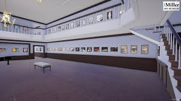
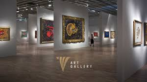
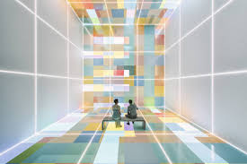
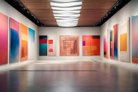

The Virtual Art Gallery represents a groundbreaking evolution in the realm of art presentation and appreciation. As technology continues to advance, the convergence of art and the digital world has given rise to a new era in the art industry. This introduction provides an overview of what virtual art galleries are, their significance in contemporary society, and the transformative impact they have on how we engage with art. Traditional art galleries have long been the physical spaces where artists showcased their creations, and art enthusiasts converged to admire and connect with art.